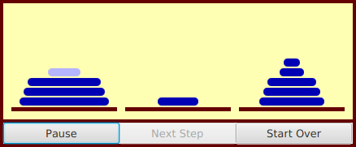

Section 12.3
Threads and Parallel Processing
The example in Subsection 12.2.4 in the previous section used parallel processing to execute pieces of a large task. On a computer that has several processors, this allows the computation to be completed more quickly. However, the way that the program divided up the computation into subtasks was not optimal. Nor was the way that the threads were managed. In this section, we will look at two more versions of that program. The first improves the way the problem is decomposed into subtasks. The second improves the way threads are used. Along the way, I'll introduce a couple of built-in classes that Java provides to support parallel processing. Later in the section, I will cover wait() and notify(), lower-level methods that can be used to control parallel processes more directly.
12.3.1 Problem Decomposition
The sample program MultiprocessingDemo1.java divides the task of computing an image into several subtasks and assigns each subtask to a thread. While this works OK, there is a problem: Some of the subtasks might take substantially longer than others. The program divides the image up into equal parts, but the fact is that some parts of the image require more computation than others. In fact, if you run the program with three threads, you'll notice that the middle piece takes a little longer to compute than the top or bottom piece. In general, when dividing a problem into subproblems, it is very hard to predict just how much time it will take to solve each subproblem. Let's say that one particular subproblem happens to take a lot longer than all the others. The thread that computes that subproblem will continue to run for a relatively long time after all the other threads have completed. During that time, only one of the computer's processors will be working; the rest will be idle.
As a simple example, suppose that your computer has two processors. You divide the problem into two subproblems and create a thread to run each subproblem Your hope is that by using both processors, you can get your answer in half the time that it would take when using one processor. But if one subproblem takes four times longer than the other to solve, then for most of the time, only one processor will be working. In this case, you will only have cut the time needed to get your answer by 20%.
Even if you manage to divide your problem into subproblems that require equal amounts of computation, you still can't depend on all the subproblems requiring equal amounts of time to solve. For example, some of the processors on your computer might be busy running other programs. Or perhaps some of the processors are simply slower than others. (This is not so likely when running your computation on a single computer, but when distributing computation across several networked computers, as we will do later in this chapter, differences in processor speed can be a major issue.)
The common technique for dealing with all this is to divide the problem into a fairly large number of subproblems—many more subproblems than there are processors. This means that each processor will have to solve several subproblems. Each time a processor completes one subtask, it is assigned another subtask to work on, until all the subtasks have been assigned. Of course, there will still be variation in the time that the various subtasks require. One processor might complete several subproblems while another works on one particularly difficult case. And a slow or busy processor might complete only one or two subproblems while another processor finishes five or six. Each processor can work at its own pace. As long as the subproblems are fairly small, most of the processors can be kept busy until near the end of the computation. This is known as load balancing: the computational load is balanced among the available processors in order to keep them all as busy as possible. Of course, some processors will still finish before others, but not by longer than the time it takes to complete the longest subtask.
While the subproblems should be small, they should not be too small. There is some computational overhead involved in creating the subproblems and assigning them to processors. If the subproblems are very small, this overhead can add significantly to the total amount of work that has to be done. In my example program, the task is to compute a color for each pixel in an image. For dividing that task up into subtasks, one possibility would be to have each subtask compute just one pixel. But the subtasks produced in that way are probably too small. So, instead, each subtask in my program will compute the colors for one row of pixels. Since there are several hundred rows of pixels in the image, the number of subtasks will be fairly large, while each subtask will also be fairly large. The result is fairly good load balancing, with a reasonable amount of overhead.
Note, by the way, that the problem that we are working on is a very easy one for parallel programming. When we divide the problem of calculating an image into subproblems, all the subproblems are completely independent. It is possible to work on any number of them simultaneously, and they can be done in any order. Things get a lot more complicated when some subtasks produce results that are required by other subtasks. In that case, the subtasks are not independent, and the order in which the subtasks are performed is important. Furthermore, there has to be some way for results from one subtask to be shared with other tasks. When the subtasks are executed by different threads, this raises all the issues involved in controlling access of threads to shared resources. So, in general, decomposing a problem for parallel processing is much more difficult than it might appear from our relatively simple example. But for the most part, that's a topic for a course in parallel computing, not an introductory programming course.
12.3.2 Thread Pools and Task Queues
Once we have decided how to decompose a task into subtasks, there is the question of how to assign those subtasks to threads. Typically, in an object-oriented approach, each subtask will be represented by an object. Since a task represents some computation, it's natural for the object that represents it to have an instance method that does the computation. To execute the task, it is only necessary to call its computation method. In my program, the computation method is called run() and the task object implements the standard Runnable interface that was discussed in Subsection 12.1.1. This interface is a natural way to represent computational tasks. It's possible to create a new thread for each Runnable. However, that doesn't really make sense when there are many tasks, since there is a significant amount of overhead involved in creating each new thread. A better alternative is to create just a few threads and let each thread execute a number of tasks.
The optimal number of threads to use is not entirely clear, and it can depend on exactly what problem you are trying to solve. The goal is to keep all of the computer's processors busy. In the image-computing example, it works well to create one thread for each available processor, but that won't be true for all problems. In particular, if a thread can block for a non-trivial amount of time while waiting for some event or for access to some resource, you want to have extra threads around for the processor to run while other threads are blocked. We'll encounter exactly that situation when we turn to using threads with networking in Section 12.4.
When several threads are available for performing tasks, those threads are called a thread pool. Thread pools are used to avoid creating a new thread to perform each task. Instead, when a task needs to be performed, it can be assigned to any idle thread in the "pool."
Once all the threads in the thread pool are busy, any additional tasks will have to wait until one of the threads becomes idle. This is a natural application for a queue: Associated with the thread pool is a queue of waiting tasks. As tasks become available, they are added to the queue. Every time that a thread finishes a task, it goes to the queue to get another task to work on.
Note that there is only one task queue for the thread pool. All the threads in the pool use the same queue, so the queue is a shared resource. As always with shared resources, race conditions are possible and synchronization is essential. Without synchronization, for example, it is possible that two threads trying to get items from the queue at the same time will end up retrieving the same item. (See if you can spot the race conditions in the dequeue() method in Subsection 9.3.2.)
Java has a built-in class to solve this problem: ConcurrentLinkedQueue. This class and others that can be useful in parallel programming are defined in the package java.util.concurrent. It is a parameterized class so that to create a queue that can hold objects of type Runnable, you can say
ConcurrentLinkedQueue<Runnable> queue = new ConcurrentLinkedQueue<>();
This class represents a queue, implemented as a linked list, in which operations on the queue are properly synchronized. The operations on a ConcurrentLinkedQueue are not exactly the queue operations that we are used to. The method for adding a new item, x, to the end of queue is queue.add(x). The method for removing an item from the front of queue is queue.poll(). The queue.poll() method returns null if the queue is empty; thus, poll() can be used to test whether the queue is empty and to retrieve an item if it is not. It makes sense to do things in this way because testing whether the queue is non-empty before taking an item from the queue involves a race condition: Without synchronization, it is possible for another thread to remove the last item from the queue between the time when you check that the queue is non-empty and the time when you try to take the item from the queue. By the time you try to get the item, there's nothing there! On the other hand, queue.poll() is an "atomic" operation (Subsection 12.1.5).
To use ConcurrentLinkedQueue in our image-computing example, we can use the queue along with a thread pool. To begin the computation of the image, we create all the tasks that make up the image and add them to the queue. Then, we can create and start the worker threads that will execute the tasks. Each thread will run in a loop in which it gets one task from the queue, by calling the queue's poll() method, and carries out that task. Since the task is an object of type Runnable, it is only necessary for the thread to call the task's run() method. When the poll() method returns null, the queue is empty and the thread can terminate because all the tasks have been assigned to threads.
The sample program MultiprocessingDemo2.java implements this idea. It uses a queue, taskQueue, of type ConcurrentLinkedQueue<Runnable> to hold the tasks. In addition, in order to allow the user to abort the computation before it finishes, it uses the volatile boolean variable running to signal the thread when the user aborts the computation. The thread should terminate when this variable is set to false, even if there are still tasks remaining in the queue. The threads are defined by a nested class named WorkerThread. It is quite short and simple to write:
private class WorkerThread extends Thread {
public void run() {
try {
while (running) {
Runnable task = taskQueue.poll(); // Get a task from the queue.
if (task == null)
break; // (because the queue is empty)
task.run(); // Execute the task;
}
}
finally {
threadFinished(); // Records fact that this thread has terminated.
// Done in finally to make sure it gets called.
}
}
}
The program uses a nested class named MandelbrotTask to represent the task of computing one row of pixels in the image. This class implements the Runnable interface. Its run() method does the actual work, that is, compute the color of each pixel, and apply the colors to the image. Here is what the program does to start the computation (with a few details omitted):
taskQueue = new ConcurrentLinkedQueue<Runnable>(); // Create the queue.
for (int row = 0; row < height; row++) { // height is number of rows in image
MandelbrotTask task;
task = ... ; // Create a task to compute one row of the image.
taskQueue.add(task); // Add the task to the queue.
}
int threadCount = ... ; // Number of threads in the pool (selected by user).
workers = new WorkerThread[threadCount];
running = true; // Set the signal before starting the threads!
threadsRemaining = workers; // Records how many threads are still running.
for (int i = 0; i < threadCount; i++) {
workers[i] = new WorkerThread();
try {
workers[i].setPriority( Thread.currentThread().getPriority() - 1 );
}
catch (Exception e) {
}
workers[i].start();
}
Note that it is important that the tasks be added to the queue before the threads are started. The threads see an empty queue as a signal to terminate. If the queue is empty when the threads are started, they might see an empty queue and terminate immediately after being started, without performing any tasks!
You should try out MultiprocessingDemo2. It computes the same image as MultiprocessingDemo1, but the rows of pixels are not computed in the same order as in that program (if there is more than one thread). If you look carefully, you might see that the rows of pixels are not added to the image in strict order from top to bottom. This is because it is possible for one thread to finish row number i+1 while another thread is still working on row i, or even earlier rows. (The effect might be more apparent if you use more threads than you have processors. Try it with 20 threads.)
12.3.3 Producer/Consumer and Blocking Queues
MultiprocessingDemo2 creates an entirely new thread pool every time it draws an image. This seems wasteful. Shouldn't it be possible to create one set of threads at the beginning of the program and use them whenever an image needs to be computed? After all, the idea of a thread pool is that the threads should sit around and wait for tasks to come along and should execute them when they do. The problem is that, so far, we have no way to make a thread wait for a task to come along. To do that, we will use something called a blocking queue.
A blocking queue is an implementation of one of the classic patterns in parallel processing: the producer/consumer pattern. This pattern arises when there are one or more "producers" who produce things and one or more "consumers" who consume those things. All the producers and consumers should be able to work simultaneously (hence, parallel processing). If there are no things ready to be processed, a consumer will have to wait until one is produced. In many applications, producers also have to wait sometimes: If things can only be consumed at a rate of, say, one per minute, it doesn't make sense for the producers to produce them indefinitely at a rate of two per minute. That would just lead to an unlimited build-up of things waiting to be processed. Therefore, it's often useful to put a limit on the number of things that can be waiting for processing. When that limit is reached, producers should wait before producing more things.
We need a way to get the things from the producers to the consumers. A queue is an obvious answer: Producers place items into the queue as they are produced. Consumers remove items from the other end of the queue.

We are talking parallel processing, so we need a synchronized queue, but we need more than that. When the queue is empty, we need a way to have consumers wait until an item appears in the queue. If the queue becomes full, we need a way to have producers wait until a space opens up in the queue. In our application, the producers and consumers are threads. A thread that is suspended, waiting for something to happen, is said to be blocked, and the type of queue that we need is called a blocking queue. In a blocking queue, the operation of dequeueing an item from the queue can block if the queue is empty. That is, if a thread tries to dequeue an item from an empty queue, the thread will be suspended until an item becomes available; at that time, it will wake up, retrieve the item, and proceed. Similarly, if the queue has a limited capacity, a producer that tries to enqueue an item can block if there is no space in the queue.
Java has two classes that implement blocking queues: LinkedBlockingQueue and ArrayBlockingQueue. These are parameterized types to allow you to specify the type of item that the queue can hold. Both classes are defined in the package java.util.concurrent and both implement an interface called BlockingQueue. If bqueue is a blocking queue belonging to one of these classes, then the following operations are defined:
- bqueue.take() -- Removes an item from the queue and returns it. If the queue is empty when this method is called, the thread that called it will block until an item becomes available. This method throws an InterruptedException if the thread is interrupted while it is blocked.
- bqueue.put(item) -- Adds the item to the queue. If the queue has a limited capacity and is full, the thread that called it will block until a space opens up in the queue. This method throws an InterruptedException if the thread is interrupted while it is blocked.
- bqueue.add(item) -- Adds the item to the queue, if space is available. If the queue has a limited capacity and is full, an IllegalStateException is thrown. This method does not block.
- bqueue.clear() -- Removes all items from the queue and discards them.
Java's blocking queues define many additional methods (for example, bqueue.poll(500) is similar to bqueue.take(), except that it will not block for longer than 500 milliseconds), but the four listed here are sufficient for our purposes. Note that I have listed two methods for adding items to the queue: bqueue.put(item) blocks if there is not space available in the queue and is most appropriate for use with blocking queues that have a limited capacity; bqueue.add(item) does not block and is most appropriate for use with blocking queues that have an unlimited capacity.
An ArrayBlockingQueue has a maximum capacity that is specified when it is constructed. For example, to create a blocking queue that can hold up to 25 objects of type ItemType, you could say:
ArrayBlockingQueue<ItemType> bqueue = new ArrayBlockingQueue<>(25);
With this declaration, bqueue.put(item) will block if bqueue already contains 25 items, while bqueue.add(item) will throw an exception in that case. Recall that this ensures that items are not produced indefinitely at a rate faster than they can be consumed. A LinkedBlockingQueue is meant for creating blocking queues with unlimited capacity. For example,
LinkedBlockingQueue<ItemType> bqueue = new LinkedBlockingQueue<>();
creates a queue with no upper limit on the number of items that it can contain. In this case, bqueue.put(item) will never block and bqueue.add(item) will never throw an IllegalStateException. You would use a LinkedBlockingQueue when you want to avoid blocking of producers, and you have some other way of ensuring that the queue will not grow to arbitrary size. For both types of blocking queue, bqueue.take() will block if the queue is empty.
The sample program MultiprocessingDemo3.java uses a LinkedBlockingQueue in place of the ConcurrentLinkedQueue in the previous version, MultiprocessingDemo2.java. In this example, the queue holds tasks, that is, items of type Runnable, and the queue is declared as an instance variable named taskQueue:
LinkedBlockingQueue<Runnable> taskQueue;
When the user clicks the "Start" button and it's time to compute an image, all of the tasks that make up the computation are put into this queue. This is done by calling taskQueue.add(task) for each task. It's important that this can be done without blocking, since the tasks are created in the event-handling thread, and we don't want to block that. The queue in this program cannot grow indefinitely because the program only works on one image at a time, and there are only a few hundred tasks per image.
Just as in the previous version of the program, worker threads belonging to a thread pool will remove tasks from the queue and carry them out. However, in this case, the threads are created once at the beginning of the program—actually, the first time the "Start" button is pressed—and the same threads are reused for any number of images. When there are no tasks to execute, the task queue is empty and the worker threads will block until tasks become available. Each worker thread runs in an infinite loop, processing tasks forever, but it will spend a lot of its time blocked, waiting for a task to be added to the queue. Here is the inner class that defines the worker threads:
/**
* This class defines the worker threads that make up the thread pool.
* A WorkerThread runs in a loop in which it retrieves a task from the
* taskQueue and calls the run() method in that task. Note that if
* the queue is empty, the thread blocks until a task becomes available
* in the queue. The constructor starts the thread, so there is no
* need for the main program to do so. The thread will run at a priority
* that is one less than the priority of the thread that calls the
* constructor.
*
* A WorkerThread is designed to run in an infinite loop. It will
* end only when the Java virtual machine exits. (This assumes that
* the tasks that are executed don't throw exceptions, which is true
* in this program.) The constructor sets the thread to run as
* a daemon thread; the Java virtual machine will exit automatically when
* the only threads are daemon threads, so the existence of the thread
* pool will not stop the JVM from exiting.
*/
private class WorkerThread extends Thread {
WorkerThread() {
try {
setPriority( Thread.currentThread().getPriority() - 1);
}
catch (Exception e) {
}
try {
setDaemon(true);
}
catch (Exception e) {
}
start(); // Thread starts as soon as it is constructed.
}
public void run() {
while (true) {
try {
Runnable task = taskQueue.take(); // wait for task if necessary
task.run();
}
catch (InterruptedException e) {
}
}
}
}
We should look more closely at how the thread pool works. The worker threads are created and started before there is any task to perform. Each thread immediately calls taskQueue.take(). Since the task queue is empty, all the worker threads will block as soon as they are started. To start the computation of an image, the event-handling thread will create tasks and add them to the queue. As soon as this happens, worker threads will wake up and start processing tasks, and they will continue doing so until the queue is emptied. (Note that on a multi-processor computer, some worker threads can start processing even while the event thread is still adding tasks to the queue.) When the queue is empty, the worker threads will go back to sleep until processing starts on the next image.
An interesting point in this program is that we want to be able to abort the computation before it finishes, but we don't want the worker threads to terminate when that happens. When the user clicks the "Abort" button, the program calls taskQueue.clear(), which prevents any more tasks from being assigned to worker threads. However, some tasks are most likely already being executed when the task queue is cleared. Those tasks will complete after the computation in which they are subtasks has supposedly been aborted. When those subtasks complete, we don't want their output to be applied to the image.
My solution is to assign a job number to each computation job. The job number of the current job is stored in an instance variable named jobNum, and each task object has an instance variable that tells which task that job is part of. When a job ends—either because the job finishes on its own or because the user aborts it—the value of jobNum is incremented. When a task completes, the job number stored in the task object is compared to jobNum. If they are equal, then the task is part of the current job, and its output is applied to the image. If they are not equal, then the task was part of a previous job, and its output is discarded.
It's important that access to jobNum be properly synchronized. Otherwise, one thread might check the job number just as another thread is incrementing it, and output meant for an old job might sneak through after that job has been aborted. In the program, all the methods that access or change jobNum are synchronized. You can read the source code to see how it works.
One more point about MultiprocessingDemo3.... I have not provided any way to terminate the worker threads in this program. They will continue to run until the Java Virtual Machine exits. To allow thread termination before that, we could use a volatile signaling variable, running, and set its value to false when we want the worker threads to terminate. The run() methods for the threads would be replaced by
public void run() {
while ( running ) {
try {
Runnable task = taskQueue.take();
task.run();
}
catch (InterruptedException e) {
}
}
}
However, if a thread is blocked in taskQueue.take(), it will not see the new value of running until it becomes unblocked. To ensure that that happens, it is necessary to call worker.interrupt() for each worker thread worker, just after setting runner to false.
If a worker thread is executing a task when running is set to false, the thread will not terminate until that task has completed. If the tasks are reasonably short, this is not a problem. If tasks can take longer to execute than you are willing to wait for the threads to terminate, then each task must also check the value of running periodically and exit when that value becomes false.
12.3.4 The ExecutorService Approach
Since thread pools are common in parallel programming, it is not surprising that Java has higher level tools for creating and managing thread pools. The interface ExecutorService, in package java.util.concurrent, defines services that can execute tasks that are submitted to it. Class Executors contains static methods that can be used to create ExecutorServices of various types. In particular, Executors.newFixedThreadPool(n), where n is an int, creates a thread pool with n threads. To get a thread pool with one thread per available processor, you can say
int processors = Runtime.getRuntime().availableProcessors(); ExecutorService executor = Executors.newFixedThreadPool(processors);
The method executor.execute(task) can be used to submit a Runnable object, task, for execution. The method returns immediately after placing task into a queue of waiting tasks. Threads in the thread pool remove tasks from the queue and execute them.
The method executor.shutdown() tells the thread pool to shut down after all waiting tasks have been executed. The method returns immediately, without waiting for the threads to finish. After this method has been called, it is not legal to add new tasks. It is not an error to call shutdown() more than once. The threads in the thread pool are not daemon threads; if the service is not shut down, the existence of the threads will stop the Java Virtual Machine from shutting down after other threads have exited.
The method executor.shutdownNow() is similar to executor.shutdown() but it discards any waiting tasks that are still in the queue. Before exiting, the threads in the pool will complete any tasks they have already removed from the queue.
The sample program MultiprocessingDemo4.java is a variation on MultiprocessingDemo3 that uses an ExecutorService instead of using threads and a blocking queue directly. (Since I have not found an easy way to get an ExecutorService to drop waiting tasks without shutting down, MultiprocessingDemo4 creates a new ExecutorService each time it computes a new image.)
Tasks for an ExecutorService can also be represented by objects of type Callable<T>, which is a parameterized functional interface that defines the method call() with no parameters and a return type of T. A Callable represents a task that outputs a value.
A Callable, c, can be submitted to an ExecutorService by calling executor.submit(c). The Callable will then be executed at some future time. The problem is, how to get the result of the computation when it completes? This problem is solved by another interface, Future<T>, which represents a value of type T that might not be available until some future time. The method executor.submit(c) returns a Future that represents the result of the future computation.
A Future, v, defines several methods, including v.isDone(), which is a boolean-valued function that can be called to check whether the result is available; and v.get(), which will retrieve the value of the future. The method v.get() will block until the value is available. It can also generate exceptions and needs to be called in a try..catch statement.
As an example, ThreadTest4.java uses Callables, Futures, and an ExecutorService to count the number of primes in a certain range of integers. (This is the same rather useless computation that was done by ThreadTest2.java in Subsection 12.1.3.) In this program, a subtask counts the primes in a subrange of integers. The subtasks are represented by objects of type Callable<Integer>, defined by this nested class:
/**
* An object belonging to this class will count primes in a specified range
* of integers. The range is from min to max, inclusive, where min and max
* are given as parameters to the constructor. The counting is done in
* the call() method, which returns the number of primes that were found.
*/
private static class CountPrimesTask implements Callable<Integer> {
int min, max;
public CountPrimesTask(int min, int max) {
this.min = min;
this.max = max;
}
public Integer call() {
int count = countPrimes(min,max); // does the counting
return count;
}
}
All the subtasks are submitted to a thread pool implemented as an ExecutorService, and the Futures that are returned are saved in an array list. In outline:
int processors = Runtime.getRuntime().availableProcessors();
ExecutorService executor = Executors.newFixedThreadPool(processors);
ArrayList<Future<Integer>> results = new ArrayList<>();
for (int i = 0; i < numberOfTasks; i++) {
CountPrimesTask oneTask = . . . ;
Future<Integer> oneResult = executor.submit( oneTask );
results.add(oneResult); // Save the Future representing the (future) result.
}
The integers that are output by all the subtasks need to be added up to give a final result. The outputs of the subtasks are obtained using the get() methods of the Futures in the list. Since get() blocks until the result is available, the process completes only when all subtasks have finished:
int total = 0;
for ( Future<Integer> res : results) {
try {
total += res.get(); // Waits for task to complete!
}
catch (Exception e) { // Should not occur in this program.
}
}
12.3.5 Wait and Notify
Suppose that we wanted to implement our own blocking queue. To do that, we must be able to make a thread block just until some event occurs. The thread is waiting for the event to occur. Somehow, it must be notified when that happens. There are two threads involved since the event that will wake one thread is caused by an action taken by another thread, such as adding an item to the queue.
Note that this is not just an issue for blocking queues. Whenever one thread produces some sort of result that is needed by another thread, that imposes some restriction on the order in which the threads can do their computations. If the second thread gets to the point where it needs the result from the first thread, it might have to stop and wait for the result to be produced. Since the second thread can't continue, it might as well go to sleep. But then there has to be some way to notify the second thread when the result is ready, so that it can wake up and continue its computation.
Java, of course, has a way to do this kind of "waiting" and "notifying": It has wait() and notify() methods that are defined as instance methods in class Object and so can be used with any object. These methods can be used internally in blocking queues. They are fairly low-level, tricky, and error-prone, and you should use higher-level control strategies such as blocking queues when possible. However, it's nice to know about wait() and notify() in case you ever need to use them directly. (I don't know whether they are actually used in Java's standard blocking queue classes, since Java has other ways of solving the wait/notify problem.)
The reason why wait() and notify() should be associated with objects is not obvious, so don't worry about it at this point. It does, at least, make it possible to direct different notifications to different recipients, depending on which object's notify() method is called.
The general idea is that when a thread calls a wait() method in some object, that thread goes to sleep until the notify() method in the same object is called. It will have to be called, obviously, by another thread, since the thread that called wait() is sleeping. A typical pattern is that Thread A calls wait() when it needs a result from Thread B, but that result is not yet available. When Thread B has the result ready, it calls notify(), which will wake Thread A up, if it is waiting, so that it can use the result. It is not an error to call notify() when no one is waiting; it just has no effect. To implement this, Thread A will execute code similar to the following, where obj is some object:
if ( resultIsAvailable() == false ) obj.wait(); // wait for notification that the result is available useTheResult();
while Thread B does something like:
generateTheResult(); obj.notify(); // send out a notification that the result is available
Now, there is a really nasty race condition in this code. The two threads might execute their code in the following order:
1. Thread A checks resultIsAvailable() and finds that the result is not ready,
so it decides to execute the obj.wait() statement, but before it does,
2. Thread B finishes generating the result and calls obj.notify()
3. Thread A calls obj.wait() to wait for notification that the result is ready.
In Step 3, Thread A is waiting for a notification that will never come, because notify() has already been called in Step 2. This is a kind of deadlock that can leave Thread A waiting forever. Obviously, we need some kind of synchronization. The solution is to enclose both Thread A's code and Thread B's code in synchronized statements, and it is very natural to synchronize on the same object, obj, that is used for the calls to wait() and notify(). In fact, since synchronization is almost always needed when wait() and notify() are used, Java makes it an absolute requirement. In Java, a thread can legally call obj.wait() or obj.notify() only if that thread holds the synchronization lock associated with the object obj. If it does not hold that lock, then an exception is thrown. (The exception is of type IllegalMonitorStateException, which does not require mandatory handling and which is typically not caught.) One further complication is that the wait() method can throw an InterruptedException and so should be called in a try statement that handles the exception.
To make things more definite, let's consider how we can get a result that is computed by one thread to another thread that needs the result. This is a simplified producer/consumer problem in which only one item is produced and consumed. Assume that there is a shared variable named sharedResult that is used to transfer the result from the producer to the consumer. When the result is ready, the producer sets the variable to a non-null value. The consumer can check whether the result is ready by testing whether the value of sharedResult is null. We will use a variable named lock for synchronization. The code for the producer thread could have the form:
makeResult = generateTheResult(); // Not synchronized!
synchronized(lock) {
sharedResult = makeResult;
lock.notify();
}
while the consumer would execute code such as:
synchronized(lock) {
while ( sharedResult == null ) {
try {
lock.wait();
}
catch (InterruptedException e) {
}
}
useResult = sharedResult;
}
useTheResult(useResult); // Not synchronized!
The calls to generateTheResult() and useTheResult() are not synchronized, which allows them to run in parallel with other threads that might also synchronize on lock. Since sharedResult is a shared variable, all references to sharedResult should be synchronized, so the references to sharedResult must be inside the synchronized statements. The goal is to do as little as possible (but not less) in synchronized code segments.
If you are uncommonly alert, you might notice something funny: lock.wait() does not finish until lock.notify() is executed, but since both of these methods are called in synchronized statements that synchronize on the same object, shouldn't it be impossible for both methods to be running at the same time? In fact, lock.wait() is a special case: When a thread calls lock.wait(), it gives up the lock that it holds on the synchronization object. This gives another thread a chance to execute the synchronized(lock) block that contains the lock.notify() statement. After the second thread exits from this block, the lock is returned to the consumer thread so that it can continue.
In the full producer/consumer pattern, multiple results are produced by one or more producer threads and are consumed by one or more consumer threads. Instead of having just one sharedResult object, we keep a list of objects that have been produced but not yet consumed. Let's see how this might work in a very simple class that implements the three operations on a LinkedBlockingQueue<Runnable> that are used in MultiprocessingDemo3:
import java.util.LinkedList;
public class MyLinkedBlockingQueue {
private LinkedList<Runnable> taskList = new LinkedList<Runnable>();
public void clear() {
synchronized(taskList) {
taskList.clear();
}
}
public void add(Runnable task) {
synchronized(taskList) {
taskList.addLast(task);
taskList.notify();
}
}
public Runnable take() throws InterruptedException {
synchronized(taskList) {
while (taskList.isEmpty())
taskList.wait();
return taskList.removeFirst();
}
}
}
An object of this class can be used as a direct replacement for the taskQueue in MultiprocessingDemo3.
In this class, I have chosen to synchronize on the taskList object, but any object could be used. In fact, I could simply use synchronized methods, which is equivalent to synchronizing on this. (Note that you might see a call to wait() or notify() in a synchronized instance method, with no reference to the object that is being used. Remember that wait() and notify() in that context really mean this.wait() and this.notify().)
By the way, it is essential that the call to taskList.clear() be synchronized on the same object, even though it doesn't call wait() or notify(). Otherwise, there is a race condition that can occur: The list might be cleared just after the take() method checks that taskList is non-empty and before it removes an item from the list. In that case, the list is empty again by the time taskList.removeFirst() is called, resulting in an error.
It is possible for several threads to be waiting for notification. A call to obj.notify() will wake only one of the threads that is waiting on obj. If you want to wake all threads that are waiting on obj, you can call obj.notifyAll(). obj.notify() works OK in the above example because only consumer threads can be blocked. We only need to wake one consumer thread when a task is added to the queue, and it doesn't matter which consumer gets the task. But consider a blocking queue with limited capacity, where producers and consumers can both block. When an item is added to the queue, we want to make sure that a consumer thread is notified, not just another producer. One solution is to call notifyAll() instead of notify(), which will notify all threads including any waiting consumer.
I should also mention a possible confusion about the name of the method obj.notify(). This method does not notify obj of anything! It notifies a thread that has called obj.wait() (if there is such a thread). Similarly, in obj.wait(), it's not obj that is waiting for something; it's the thread that calls the method.
And a final note on wait: There is another version of wait() that takes a number of milliseconds as a parameter. A thread that calls obj.wait(milliseconds) will wait only up to the specified number of milliseconds for a notification. If a notification doesn't occur during that period, the thread will wake up and continue without the notification. In practice, this feature is most often used to let a waiting thread wake periodically while it is waiting in order to perform some periodic task, such as causing a message "Waiting for computation to finish" to blink.
Let's look at an example that uses wait() and notify() to allow one thread to control another. The sample program TowersOfHanoiGUI.java solves the Towers Of Hanoi puzzle (Subsection 9.1.2), with control buttons that allow the user to control the execution of the algorithm. The user can click a "Next Step" button to execute just one step in the solution, which moves a single disk from one pile to another. Clicking "Run" lets the algorithm run automatically on its own; the text on the button changes from "Run" to "Pause", and clicking "Pause" stops the automatic execution. There is also a "Start Over" button that aborts the current solution and puts the puzzle back into its initial configuration. Here is a picture of the program in the middle of a solution, including the buttons:

In this program, there are two threads: a thread that runs a recursive algorithm to solve the puzzle, and the event-handling thread that reacts to user actions. When the user clicks one of the buttons, a method is called in the event-handling thread. But it's actually the thread that is running the recursion that has to respond by, for example, doing one step of the solution or starting over. The event-handling thread has to send some sort of signal to the solution thread. This is done by setting the value of a variable that is shared by both threads. The variable is named status, and its possible values are the constants GO, PAUSE, STEP, and RESTART.
When the event-handling thread changes the value of this variable, the solution thread should see the new value and respond. When status equals PAUSE, the solution thread is paused, waiting for the user to click "Run" or "Next Step". This is the initial state, when the program starts. If the user clicks "Next Step", the event-handling thread sets the value of status to "STEP"; the solution thread should see the new value and respond by executing one step of the solution and then resetting status to PAUSE. If the user clicks "Run", status is set to GO, which should cause the solution thread to run automatically. When the user clicks "Pause" while the solution is running, status is reset to PAUSE, and the solution thread should return to its paused state. If the user clicks "Start Over", the event-handling thread sets status to RESTART, and the solution thread should respond by ending the current recursive solution.
The main point for us is that when the solution thread is paused, it is sleeping. It won't see a new value for status unless it wakes up! To make that possible, the program uses wait() in the solution thread to put that thread to sleep, and it uses notify() in the event-handling thread to wake up the solution thread whenever it changes the value of status. Here are the methods that respond to clicks on the buttons. When the user clicks a button, the corresponding method changes the value of status and calls notify() to wake up the solution thread:
synchronized private void doStopGo() {
if (status == GO) { // Animation is running. Pause it.
status = PAUSE;
nextStepButton.setDisable(false);
runPauseButton.setText("Run");
}
else { // Animation is paused. Start it running.
status = GO;
nextStepButton.setDisable(true); // Disabled when animation is running
runPauseButton.setText("Pause");
}
notify(); // Wake up the thread so it can see the new status value!
}
synchronized private void doNextStep() {
status = STEP;
notify();
}
synchronized private void doRestart() {
status = RESTART;
notify();
}
These methods are synchronized to allow the calls to notify(). Remember that the notify() method in an object can only be called by a thread that holds that object's synchronization lock. In this case, the synchronization object is this. Synchronization is also necessary because of race conditions that arise due to the fact that the value of status can also be changed by the solution thread.
The solution thread calls a method named checkStatus() to check the value of status. This method calls wait() if the status is PAUSE, which puts the solution thread to sleep until the event-handling thread calls notify(). Note that if the status is RESTART, checkStatus() throws an IllegalStateException:
synchronized private void checkStatus() {
while (status == PAUSE) {
try {
wait();
}
catch (InterruptedException e) {
}
}
// At this point, status is RUN, STEP, or RESTART.
if (status == RESTART)
throw new IllegalStateException("Restart");
// At this point, status is RUN or STEP, and the solution should proceed.
}
The run() method for the solution thread sets up the initial state of the puzzle and then calls a solve() method to solve the puzzle. It runs in an infinite loop so that it can solve the puzzle multiple times. To implement the wait/notify control strategy, run() calls checkStatus() before starting the solution, and solve() calls checkStatus() after each move. If checkStatus() throws an IllegalStateException, the call to solve() is terminated early. (We used the method of throwing an exception to terminate a recursive algorithm before, in Subsection 12.2.2.)
You can check the full source code to see how this all fits into the complete program. If you want to learn how to use wait() and notify() directly, understanding this example is a good place to start!